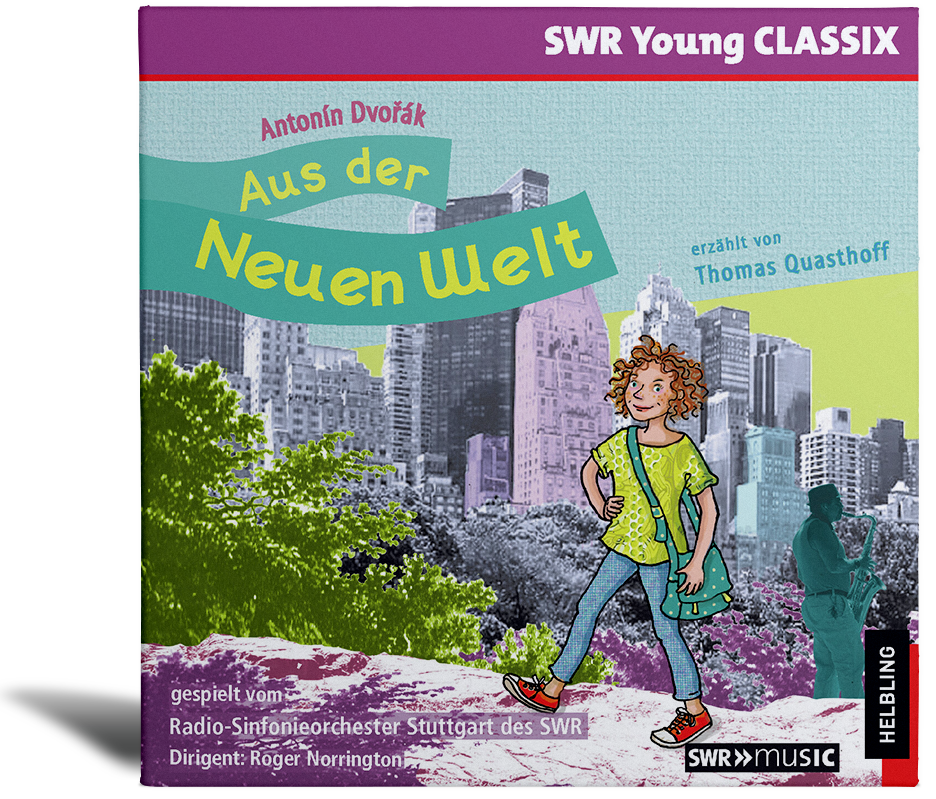

|

|
Erzählt von Thomas Quasthoff nach einer Geschichte von Kerstin Unseld u.a.
Mit Antonín Dvořáks Sinfonie Nr. 9, e-Moll, op. 95
Radio-Sinfonieorchester Stuttgart des SWR
Gefällt Euch die Hörgeschichte?
Diese und weitere Musik-Hörgeschichten der Reihe SWR Young CLASSIX gibt es auch auf CD.
Jetzt bestellen auf www.helblingmusik4kids.de!
Die preisgekrönte Reihe „SWR Young CLASSIX“ steht für hochwertige Musik-Hörgeschichten. Beliebte Märchen und spannende neue Geschichten sind verbunden mit der fantastischen Klangwelt klassischer und zeitgenössischer Orchester- und Chorwerke. Dabei sorgen auch die prominenten Sprecher (u. a. KiKA-Moderatoren Juri Tetzlaff und Malte Arkona) für Unterhaltung im besten Sinne. Die beiliegenden Booklets enthalten Infos, Rätsel und Aufgaben zur jeweiligen Hörgeschichte.